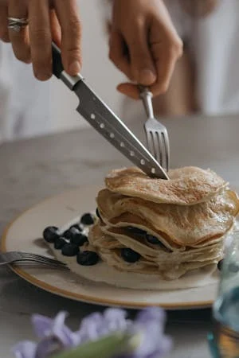

Recetario sin tacc
Indice
Panqueques
Torta de manzana
Torta de banana
Panqueques
Ingredientes
- 2 huevos
- 120 gr de maicena
- 150 ml leche
Pasos
- Mezclar huevos con la leche
- Agregar la maicena
- Dejar reposar 30 minutos en la heladera
- Enmantecar la sartén
- Hacer los panqueques

Torta de manzana
Ingredientes
- 2 huevos
- 80 cc de leche o jugo vegetal
- 250 gr de premezcla sin gluten
- 150 gr de azucar
- 1 cdita de polvo para hornear
- 1 cdita de canela en polvo
- 30 cc de aceite
- 2 manzanas verdes o rojas
Pasos
- En un recipiente vas a agregar todos los secos y los vas a mezclar muy bien: la premezcla, el azucar, el polvo para hornear y la canela.
- Se suma los ingredientes humedos: los huevos, el aceite y la leche vegetal. Vas a mezclar bien hasta tener una preparacion homogenea que no tenga grumos. Mezclar bien hasta tener una preparacion homogenea que no tenga grumos.
- Verter con cuidado la preparacion en el molde para ir al horno a 180° entre 30 y 40 minutos.

Torta de banana
Ingredientes
- 2 bananas
- 150 ml de leche o jugo vegetal
- 220 gr de premezcla sin gluten
- 140 gr de azucar
- 2 cditas de polvo para hornear
- 1 cdita de canela en polvo
- 2 huevos
- 100 gr de manteca
- 1 cucharada de esencia de vainilla
Pasos
- En un recipiente vas a agregar los huevos y el azucar. Batir hasta que quede bien mezclado.
- Añade la leche y la esencia de vainilla, mezclar todo. A continuacion, añade la harina de premezcla y el polvo para hornear y tamizar. LUego, añade la mezcla anterior poco a poco y remueve muy bien que no queden grumos.
- Pela las bananas y cortalas por la mitad a lo largo. A continuacion, aplastalas con un tenedor.
- Añade a la mezcla las bananas y remueve bien.
- Pon la manteca en un bol y derrite unos segundos en el microondas. Luego, añade a la mezcla poco a poco y remueve muy bien.
- Unta un molde de manteca y forra con papel vegetal, incorpora la masa del budín y repártelo bien. Espolvorea un par de cucharadas de azúcar moreno por encima del budín.
- Introduce el budín al horno, pon el molde en la parte central del horno y déjalo unos 30 minutos. Pincha con un palillo en el centro si sale seco estará listo, si aún sale húmedo déjalo hasta que quede hecho. Si ves que se dora mucho por encima y aún no está hecho, pon una hoja de papel de aluminio cubriendo el budín y deja que se termine de hacerse, unos 40-45 minutos o hasta que esté listo, dependerá del horno.